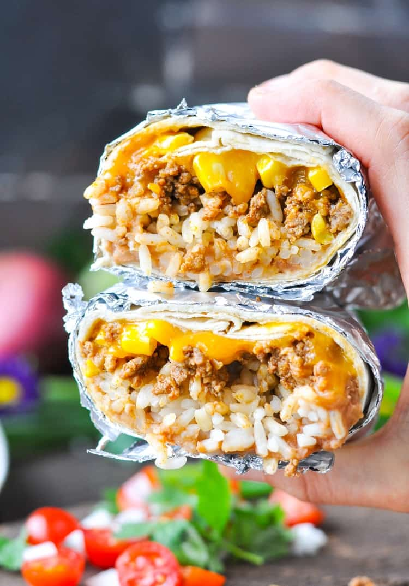

Burrito
\
Description
A burrito, is a dish in Mexican and Tex-Mex cuisine that took form in California cuisine, consisting of a flour tortilla wrapped into a sealed cylindrical shape around various ingredients.
Ingredients
- 1 lb. lean ground beef
- 1 packet taco seasoning mix
- 1 ½ cups refried beans (or 1 ½ cups drained and rinsed black beans)
- ¾ cup corn kernels
- 3 cups cooked rice
- 6 large (10-inch) flour tortillas
- 1 ½ cups shredded cheddar cheese
- Optional garnish: finely diced red onion; lettuce; diced tomato or salsa; sour cream; fresh cilantro; avocado or guacamole
Instructions
- Preheat oven to 350° F. Spray 9 x 13-inch baking dish with cooking spray and set aside.
- Cook beef with taco seasoning mix, according to seasoning package instructions.
- To prepare 1 burrito: spread ¼ cup beans down center of tortillas; top with ½ cup rice, beef, 2 tablespoons corn, and ¼ cup cheese.
- Fold in opposite sides of each tortilla, then roll up, burrito style. Place, seam-sides down, in prepared dish. Repeat with remaining ingredients to prepare 6 total burritos.
- Cover with foil and bake for 25 minutes (until heated through). If you are baking the burritos from the refrigerator while they’re still cold, it will take about 30-35 minutes for them to heat through.